皆様こんにちは、System Center サポートチームの 石原 です。
今回は、SCOM を使用して SCVMM 環境を監視する構成手順について説明します。
SCVMM 環境の監視について
SCVMM 環境の監視は、SCVMM を運用するうえで重要な要素の一つです。
ただし、SCVMM 単体には、SCVMM サーバー自体の性能状況を監視する機能や、SCVMM で管理している Hyper-V ホストおよび VM の稼動状況や性能情報を収集・監視する機能は備わっていません。SCOM を利用することで、SCVMM 環境全体の健全性をリアルタイムで監視し、問題発生時にも迅速な検知・対応を行うことが可能になります。
■ SCVMM 単体の監視機能について
SCVMM コンソールでは、Hyper-V ホストの稼働状況や一部のリソース情報を確認できます。また、仮想マシンについても、稼働状況や一部のリソース情報を確認することが可能です。
ただし、CPU 使用率、メモリ使用率、ディスク使用率、プロセス監視、イベントログ収集など、一般的な監視で必要となる項目を十分に網羅しているわけではありません。加えて、情報の収集間隔が粗いことや、アラート機能が備わっていないことから、SCVMM 単体での監視には限界があります。
※ ご参考：SCVMM コンソールで確認できる項目の例（Hyper-Vホスト）
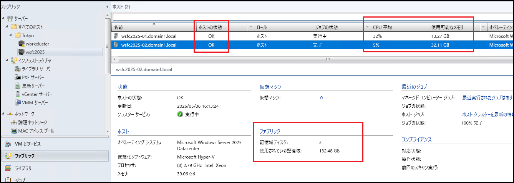
※ ご参考：SCVMM コンソールで確認できる項目の例（仮想マシン）
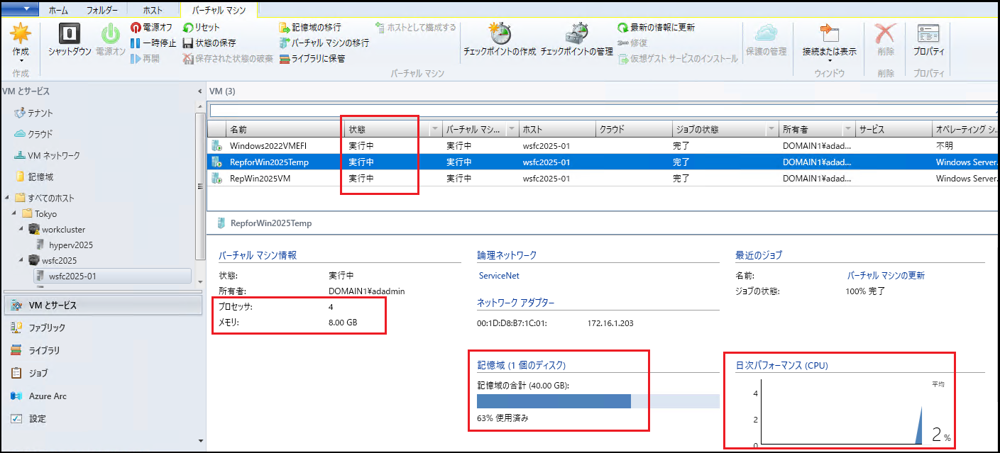
SCOM を利用することで、SCVMM 環境全体の健全性をリアルタイムで監視し、問題発生時にも迅速な検知・対応を行うことが可能になります。
SCOM 連携の構成手順
SCOM 連携については、以下の公開ドキュメントにて構成手順が説明されています。
① SCVMM の監視 | Microsoft Learn
② VMM と Operations Manager を統合して監視とレポートを行う | Microsoft Learn
② の [デプロイの概要] に記載の通り、SCOM 連携の構成は以下の順序で実施します。
１．前提条件の確認
２．SCVMM 管理サーバーに SCOM コンソールをインストール
３．SCVMM 管理サーバーと SCVMM で管理する全ての Hyper-V ホストに SCOM エージェントをインストール
４．SCOM コンソールで SCVMM 統合用の管理パックをインポート
５．SCVMM コンソールで SCOM 統合を設定
１．前提条件の確認
連係する SCOM 環境のバージョンが、SCVMM と揃っていることを確認します。また、SCVMM 管理サーバーから SCOM 管理サーバーに対して 5724 ポートが開いていることを確認します。その他、前提条件 に記載の前提条件を満たしていることを確認します。
２．SCVMM 管理サーバーに SCOM コンソールをインストール
SCVMM 管理サーバーにて SCOM のインストーラーを実行し、SCOM コンソールをインストールします。
インストール ウィザードにて [オペレーション コンソール] のみにチェックを入れることで、SCOM コンソールのみをインストールすることができます。
※ ご参考：コンソールのみのインストールを実行
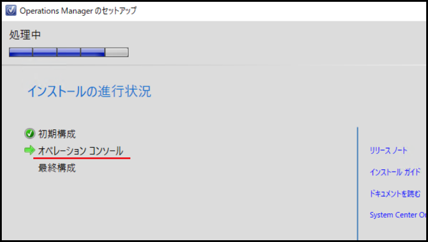
３．SCVMM 管理サーバーと Hyper-V ホストに SCOM エージェントをインストール
SCOM コンソールに管理者でログインし、SCVMM 管理サーバーと SCVMM で管理する全ての Hyper-V ホストを SCOM の管理対象として検出・管理を実行し、SCOM エージェントをインストールします。
本件の手順については、以下のドキュメントを参照してください。
検出ウィザードを使用して Windows にエージェントをインストール
SCOM の管理対象へ追加することが目的であるため、エージェントの導入方法はプッシュ インストールである必要はなく、手動インストールでも問題ありません。
MOMAgent.msi を使用して Windows エージェントを手動でインストール
※ ご参考：SCOM エージェントのインストールが完了し、管理対象に追加された状態
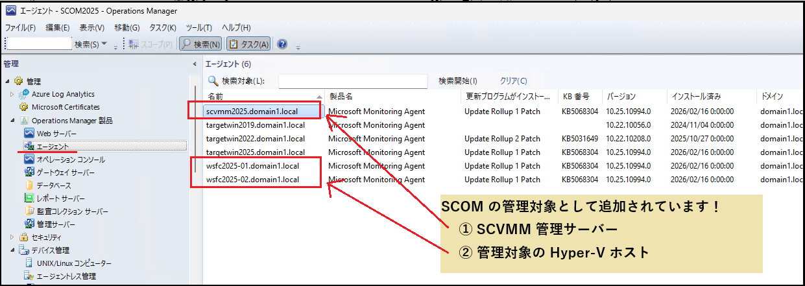
４．SCOM コンソールで SCVMM 統合用の管理パックをインポート
SCVMM 管理サーバー上の以下フォルダーに格納されている管理パックを、SCOM にインポートします。
1 | C:\Program Files\Microsoft System Center\Virtual Machine Manager\ManagementPacks |
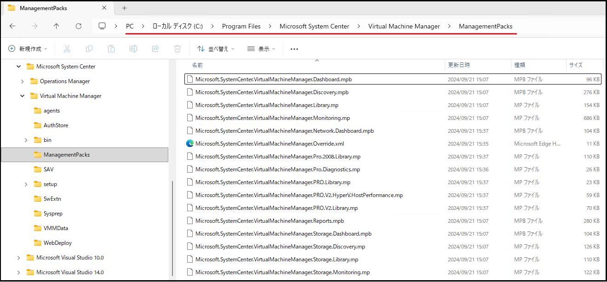
SCVMM 管理サーバーに SCOM コンソールがインストール済みのため、管理パックのインポートは SCVMM 管理サーバー上の SCOM コンソールから実行することでも、SCOM 管理サーバー上の SCOM コンソールから実行することでも、どちらでも構いません。
※ ご参考：SCVMM 統合用の管理パックのインストール
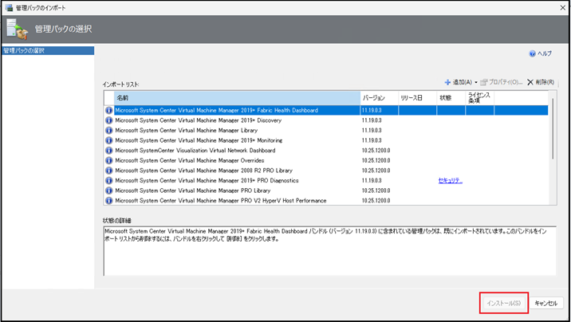
<補足情報> 管理パックのインポート手順について
ローカルに保存されている管理パックの導入手順（ディスクからインポートする手順）につきましては、以下のドキュメント内の「③ 管理パックの導入」>「3）管理パック一覧サイトから選択した管理パックを導入」をご参照ください。
管理パック (MP) のインポートについて | Japan System Center Support Blog
５．SCVMM コンソールで SCOM 統合を設定
・SCVMM 管理サーバーに管理者でログインし、SCVMM コンソールを開きます。
[設定] -> [System Center の設定] を開き、[Operations Manager サーバー] をクリックします。
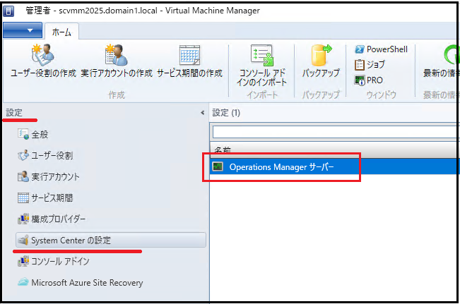
・はじめに画面を確認して、「次へ」をクリックします。
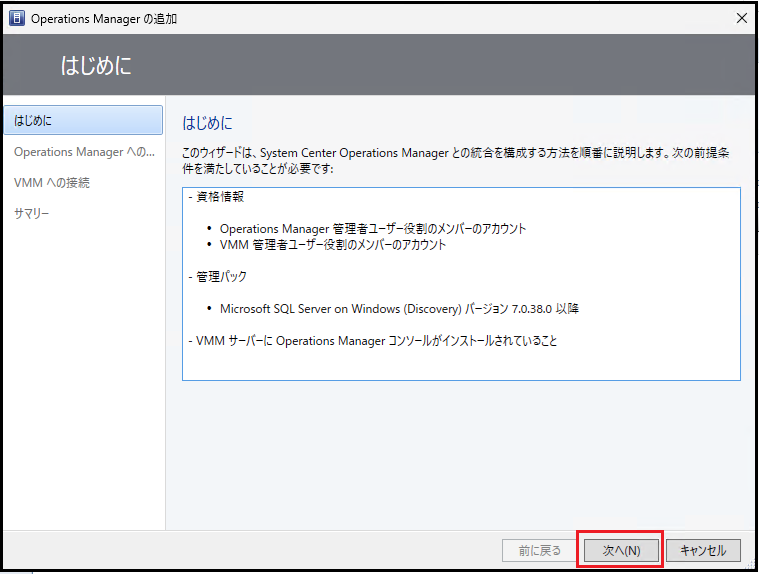
・SCOM 管理サーバーの FQDN と接続情報を入力して、「次へ」をクリックします。
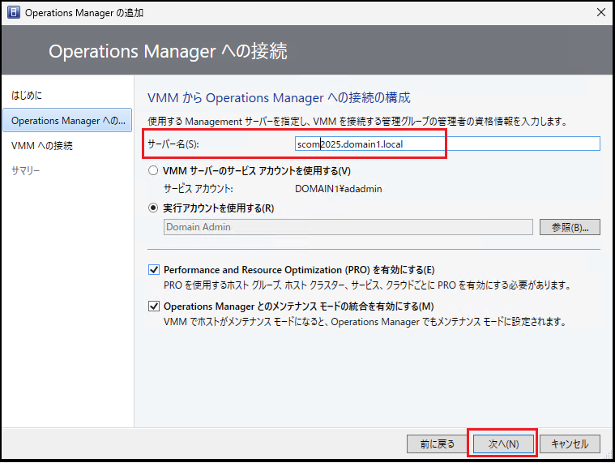
・SCOM から SCVMM への接続情報を入力して、「次へ」をクリックします。
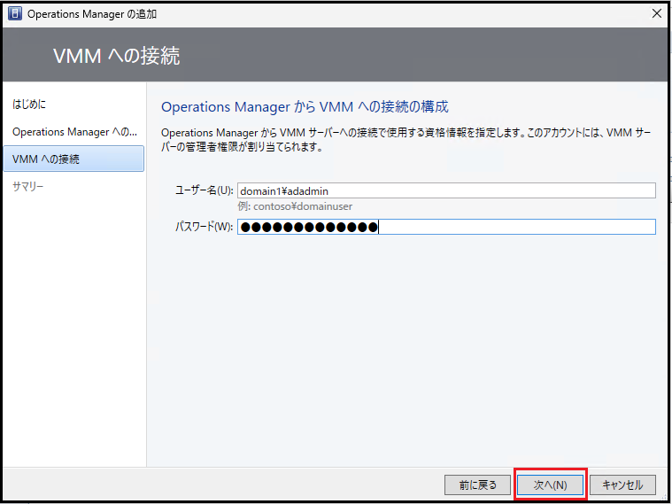
・サマリー画面で「完了」をクリックします。
以上で、SCVMM と SCOM の連携設定は完了です。
SCOM 側の確認手順
SCOM コンソールにログインし、[監視] > [Microsoft System Center Virtual Machine Manager] 配下の各種ビューにて状態確認ができます。
① SCVMM 管理サーバーと Hyper-V ホストの状態確認
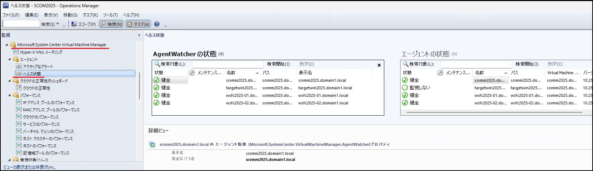
SCOM エージェントがインストールされた SCVMM 管理サーバーと Hyper-V ホストについては、SCOM で管理する通常の Windows Server と同様に、パフォーマンス カウンター情報を参照可能です。
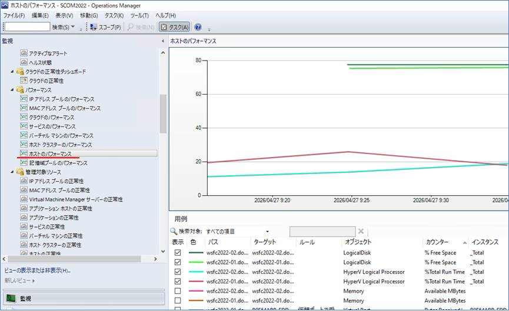
② 仮想マシンの状態確認
仮想マシンについては、稼働状況や構成情報を確認することができます。しかしながら、CPU 使用率やメモリ空き容量などのリアルタイムのパフォーマンス情報は収集されません。
そのため、仮想マシンの詳細なパフォーマンス情報を収集・監視したい場合は、SCOM による通常のサーバー監視と同様に、監視対象のサーバーへ SCOM エージェントをインストールし、SCOM の監視対象として登録していただく必要があります。
※ ご参考：仮想マシンの状態確認の例
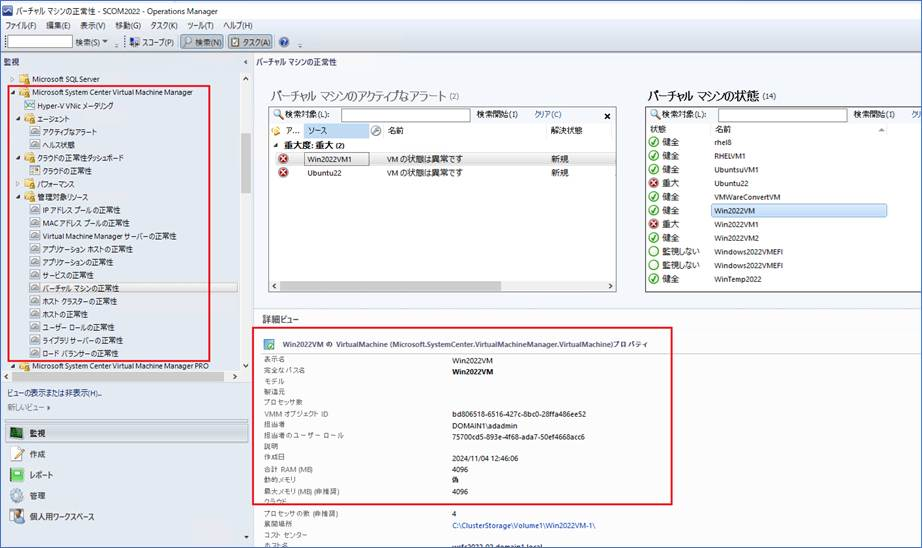
以上で、SCVMM と SCOM の連携設定は完了です。
本手順が、SCOM を用いた SCVMM 環境の監視構成の一助となれば幸いです。
※本情報の内容（添付文書、リンク先などを含む）は、作成日時点でのものであり、予告なく変更される場合があります。